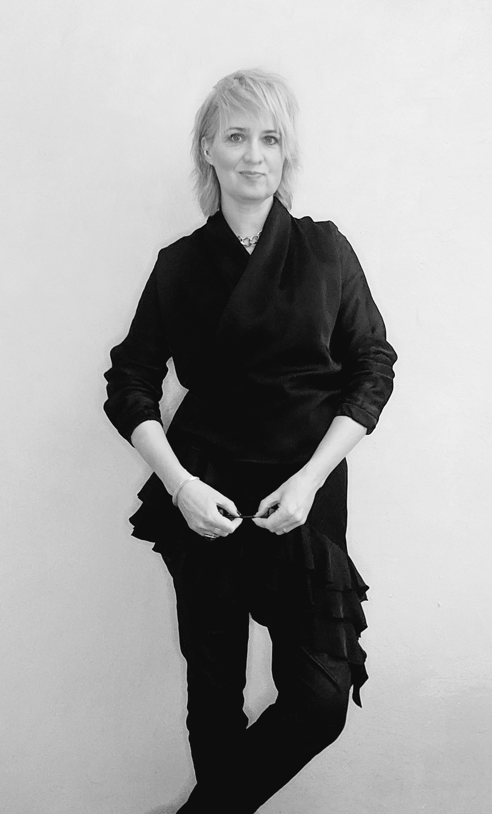

О нас
SOKOLART studio основана в 2025 году.
• Мы помогаем не просто красиво оформить помещение, а решаем конкретные бизнес-задачи и повышаем капитализацию недвижимости через дизайн, что становится вашим конкурентным преимуществом. Мы берем на себя проектирование и реализацию самых амбициозных задач.
• Обладаем экспертизой в коммерческих проектах, ориентированных на результат. Формируем имидж бренда через дизайн интерьеров.
• Одна из наших ключевых специализаций — дизайн интерьеров для ресторанов премиум-класса. Мы понимаем не только эстетику, но и операционную кухню бизнеса, что позволяет создавать не просто красивые, а коммерчески успешные проекты.
• Работа с объектами культурного наследия. Мы бережно адаптируем исторические здания к современным стандартам, сохраняя их культурную и историческую ценность, оснащая новой функциональностью.
• Частные интерьеры: мы создаем дома, которые отражают ваш образ жизни. Апартаменты и резиденции, в которых учтены потребности каждого члена семьи, а продуманный дизайн обеспечивает высокое качество жизни и комфорт.
Комплексный сервис:
Помимо дизайна интерьеров, мы предлагаем:
• Подбор недвижимости: Анализ потенциала объекта с точки зрения планировок, локации и операционных задач.
• Арт-консалтинг: Подбор искусства и коллекционного дизайна.
• Сотрудничество с проверенными партнерами: у нас развитая сеть профессиональных подрядчиков в сфере проектирования и строительства.
Мария Соколова
Основатель студии
Архитектор-дизайнер | Художник
•20 лет в дизайне интерьеров.
• В портфолио проекты, отмеченные различными международными премиями.
Сахалин - Дубай, Бодрум, Стамбул
Новиков - Москва, Катар, Стамбул и др
AVA, Patriki, Конг и др. – Москва, Loona - Сочи
Bocconcino 2 – Лондон и другие.
премия AD interior за проект SPA Still beauty space (сейчас FONTE)
• Более 15 реализованных проектов за рубежом

STUDIO
